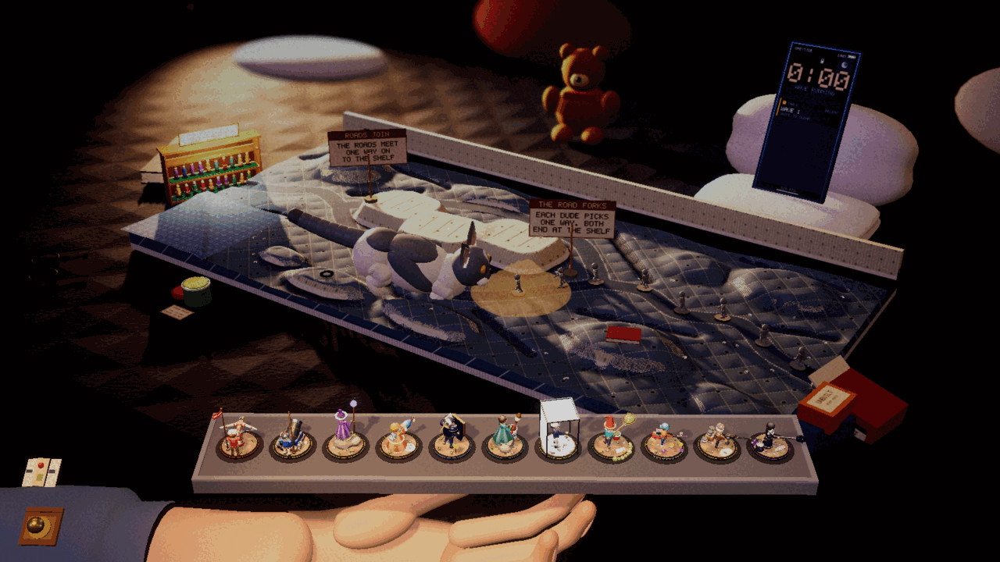
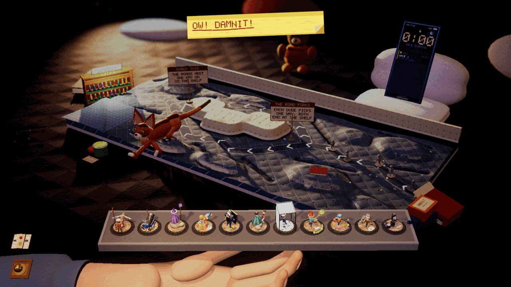
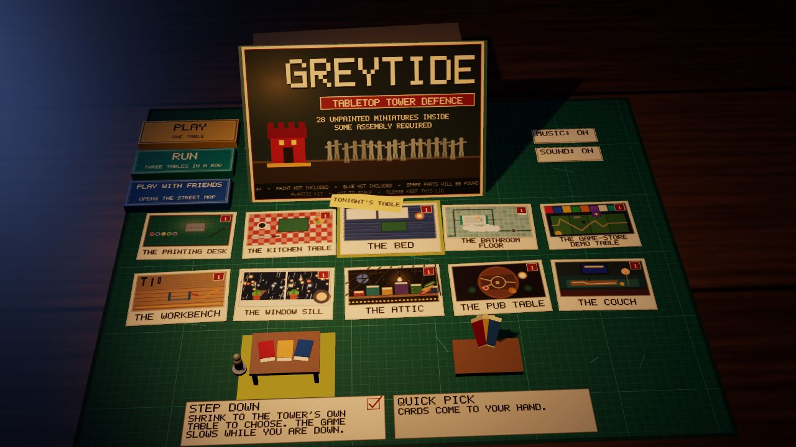

Devlog ·
Two cats went in, the owner played, and thirty-five minutes later there were twenty-five new tasks
The owner played one build and reacted in short messages; each became a written task with a worker on it, starting with the cats that helped too much and an enemy that could not be killed.
The bed table had one cat that walked across it. The owner wanted two, modelled on their own, with different behaviour. A worker built both in under an hour.
A rabbit and a mouse
The cats are jointed ellipsoids written as code; nothing in the game is a downloaded model. The worker shot its first models on a bare floor and reported that they "read as a rabbit and a mouse (round ears, tiny heads on huge bodies)". It rebuilt the ears as a pointed mesh, brightened the fur and lowered the bodies.

The grey and white cat pounces. She picks the densest cluster of enemies, crouches and wiggles for three seconds over a ring that marks the landing, then lands on it. The first pounce in a real game missed a lone enemy by 12 cm, because the ring was placed using the speed enemies are supposed to walk at. The worker measured the speed the cluster was actually walking at and fixed the mark.
The red cat lies beside the road and rakes the two leading enemies. Her first visits "raked empty road": she lay too far away and too far ahead. One stretch in five goes into the player's leg instead. The view shakes, the hand holding the tray jolts, and a note appears.


Too often, too helpful
Less than an hour and a half after the merge, the owner had played the bed: "the kitties come a bit too often and are a bit too helpful".
By the worker's own log, in a game that reached wave 5 the cats made five pounces and five stretches and took 24 to 31 kills. The new task has the pounce do about half a grunt's health and aims for under 8 percent of all damage coming from cats.
The same task carries a correction. The lead's description of the grey and white cat, and the worker's code after it, had called her "he" throughout. The owner put that right and named them: Beatrice and Zeina.
The enemy that would not die, on the owner's screen
Four table workers had logged an enemy pinned in place by knockback for 700 to 1,400 seconds. It was written up and left open. The cats' worker noted that wave 4 on the bed took about 300 seconds with or without cats.
Then it happened to the owner: "I am stuck on 5 on the miniboss, he gets knocked back but doesn't die." The bed had stuck on wave 9. The task written from that asks for a floor under every hit, weaker shoves on bosses, and health bars for them. A worker claimed it 31 seconds later. Nothing is merged yet.
Why is there an oven on the table?
In thirty-five minutes that night, 25 tasks were written from the owner's remarks. Several had a worker inside a minute.
Ten of them are one "showpiece pass" per table. Two minutes after those were filed, a rule was added to all ten. The owner had asked of the kitchen: "why is the oven small and on the kitchen table?" And why a diner's order printer beside a home fridge: "Is this a restaurant or just 'the kitchen'?"
The rule is called scale and sense. Room-sized things stand in the room at room size, and each table is one believable place, written down in one sentence.
The kitchen worker's first screenshot: "the cooker and a toy fridge stand on the table behind the board, a receipt hangs off a toaster, the room beyond is black." It rebuilt them full size behind a smaller table, then found the camera "only sees about the lowest 25 cm of anything behind the table", so the oven timer moved down to the cooker's front controls.
One earlier complaint is closed. The start screen's ten postcards now lie in two rows.

Three rules before any new card
The owner asked for many more upgrade cards, and for "QUALITY mods that aren't just filler cards". The task came with a research note on where well-loved games of this kind get their variety. Its answer: from cards that change what an attack does, not cards that add 10 percent.
Cards that fire other attacks can loop for ever, so the note sets three rules, the first taken from a game that had met the problem: a triggered attack counts for about 0.3 in further triggers, chains stop at depth 2, and every trigger has a cooldown.
The worker building the engine wrote a test to prove the depth cap works. The cap never fired. A 0.01 second cooldown was blocking the second trigger first.
What nobody has checked yet
- Nothing in the record says whether the owner recognises the cats. The worker never saw them in waves 6 to 10, and the shake and tray jolt were seen "as blurred, displaced frames", not measured.
- The stuck-enemy fix, the gentler cats and the rebuilt kitchen are all in progress. None is merged.
- Nobody has pointed a mouse at the start screen's new postcards; they were checked by layout.
- The card research says only two of its sources "were fetched and read in full" and none of its 136 ideas was checked against the game's 52 cards. The engine has run in a test scene only.